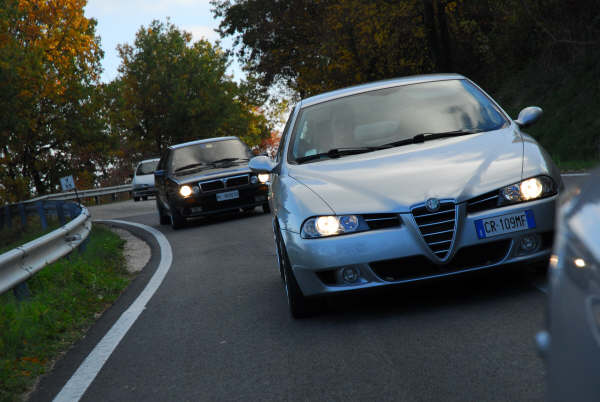
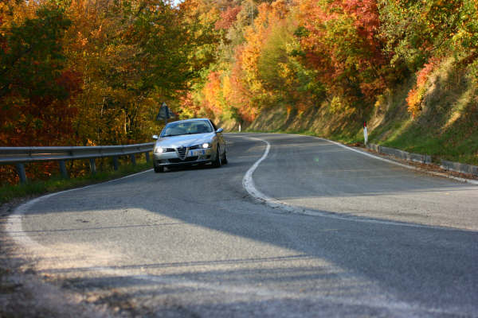
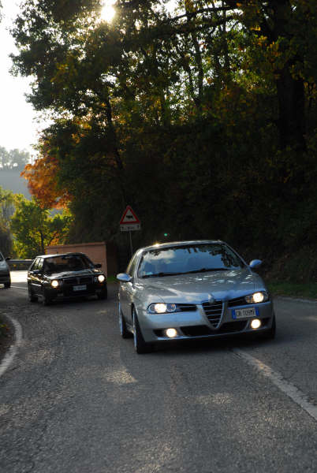
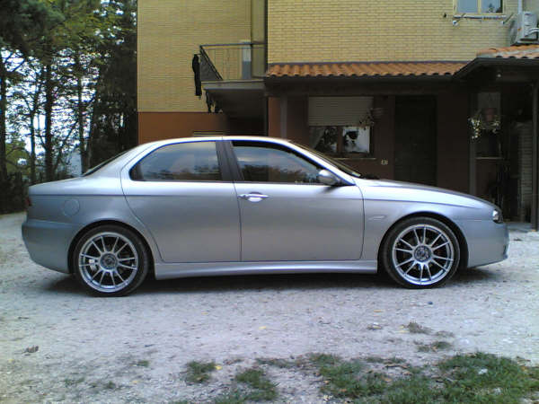
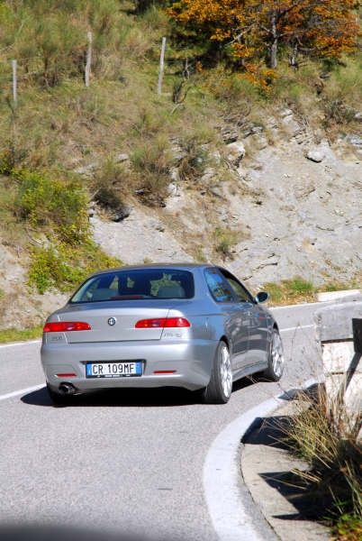
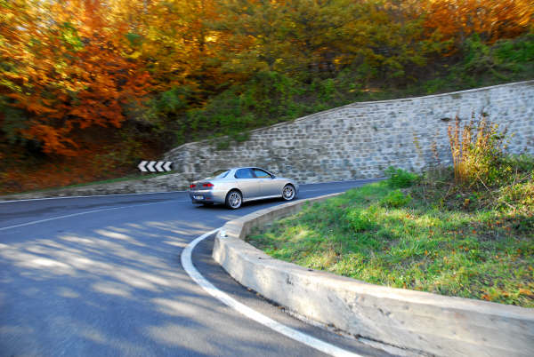
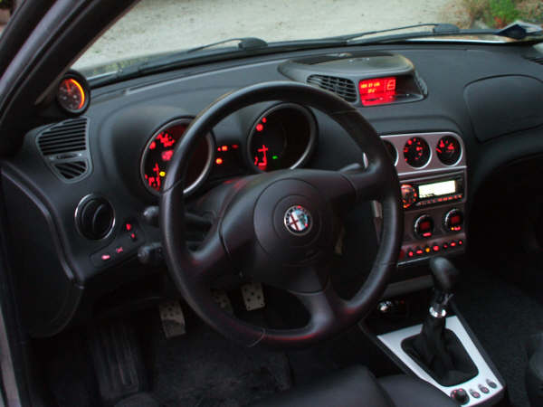
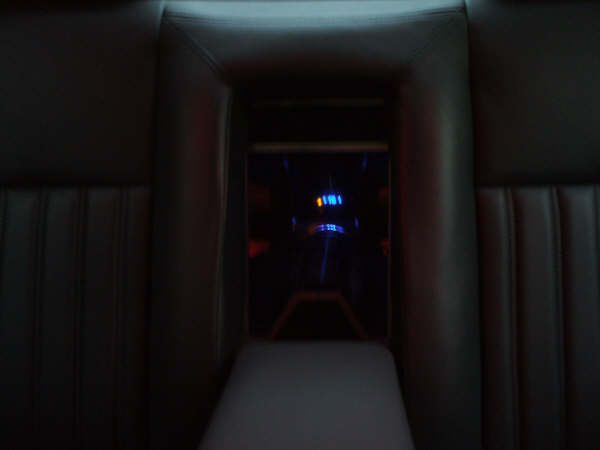

Piada - Italy
Alfa 156 1.9 JTD 2004
It's tuned with:
-Modified ecu from 140 to 170hp
-Bmc air filter
-Cutom Oil catch can
-Eibach pro spring -30mm
-Oz racing 8x18 'Ultraleggera' rims
-Toyo Proxes T1-R 225-35/18 tyres
-Custom 5mm wheel spacers (only rear)
-OMP front strutbrace
-Over 3000w Alpine Hi-Fi system
-Fiberglass sideskirts
-Turbo monometer added instrument (1.7 bar peak!)
-Shift Light by Metrika
-Custom Aluminium pedals
-Momo leather gear knob with custom shorter lever











Submitted: 2007
![[Prev]](bw_prev.gif)
![[Index]](bw_index.gif)
![[Next]](bw_next.gif)